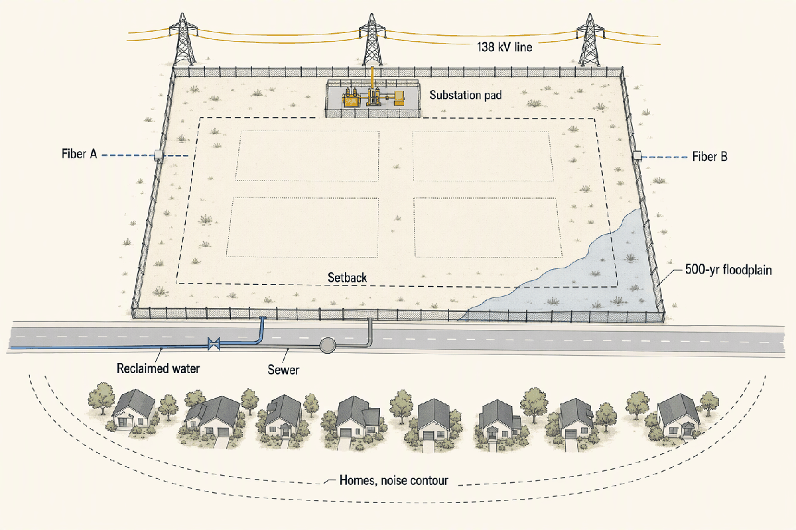
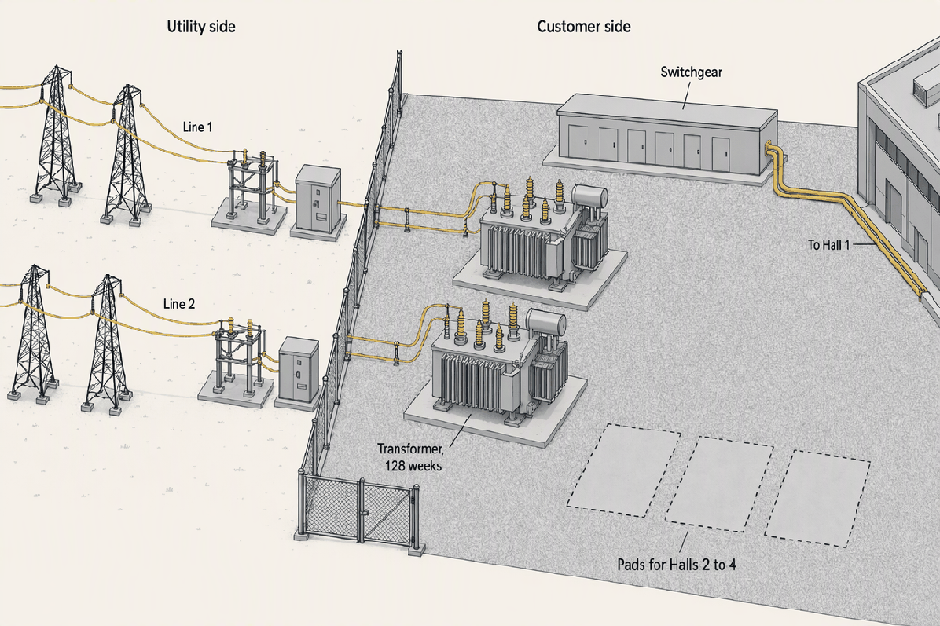
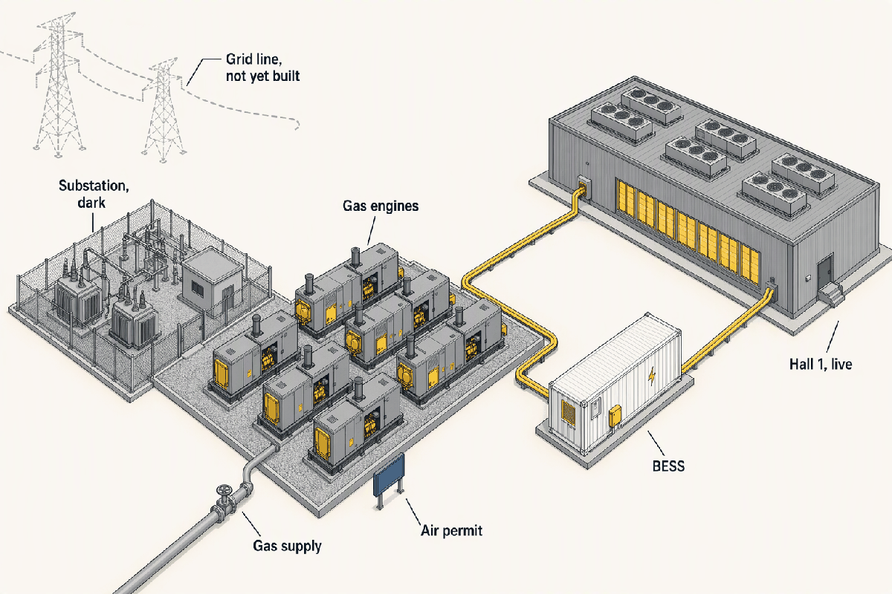

Site Selection, Grid Interconnection, Water and Procurement
Deep detail and sources: the appendix for this topic. Short version: sixty words. The research report this chapter was distilled from.
Topics 1 and 2 decided what to build. This chapter is about where it can be built, and that is a power question wearing a land question's clothes. The owner finds a parcel that can be energized on a credible date, then runs land, water, permits and equipment as parallel tracks behind an interconnection process it does not control, committing money before certainty.
- 2–5+ yearsTransmission-level load interconnection, application to energizationThe critical path, and the developer does not run it
- ~128 weeksLarge power transformer lead time (Wood Mackenzie, Q2 2025); over 160 quoted in 2026Longer than the building it energizes
- 10–30%Deposit that holds a factory slot, paid 6–12 months before groundbreakingOrdered at about 60% design
- 300 MW in under 36 monthsCBRE's 2026 bar for a first-tier sitePower delivery has dethroned fiber
- 12×Gap between one survey's average WUE (~1.8 L/kWh) and best-in-class (0.15)Solved technically, unsolved politically
- $130B+US projects blocked or delayed by local opposition (Data Center Watch, June 2026)The hearing is a site criterion
What a site must provide
| Criterion | Rank now | Before | Screened by | Getting it wrong |
|---|---|---|---|---|
| Power: availability, timeline, cost | 1 | Assumed solvable | Distance to substations, queue position, tariff terms | no project |
| Fiber and network | 2 | Was first | Carrier diversity, two physically separate entries | fiber now follows power |
| Land | 3 | Assumed solvable | Contiguous acreage, zoning, entitlements | 18–24 months of rezoning |
| Water | 4 | Afterthought | Source, rights, sewer headroom | moratorium or denial |
| Hazards | 5 | Soft cost | 500-year floodplain, seismic, wildfire smoke, heat | disqualifier, or insurance and tenant approval |
| Tax and incentives | 6 | Tiebreaker | Negotiated before land close | tiebreaker still |
| Workforce | 7 | Mid-list | Construction and operations labour | cost and schedule |
| Community acceptance | 8, rising fast | Absent | Organised opposition, prior denials nearby | the hearing kills it |
The checklist inverted. Fiber led it for decades; CBRE now says power availability and certainty overshadow connectivity, and water and the neighbours were promoted from afterthoughts to gating screens. Industrial zoning gets a parcel to the starting line, not across it (APX-site §1).
Land, hazards and fiber in numbers
- The average data center land deal reached 224 acres in 2024, up 144% since 2022, at roughly $244,000 an acre; a 100 MW facility sits on 20 to 100+ acres depending on density, and contiguity matters more than acreage.
- FEMA floodways and the 100-year zone are generally disqualifying; serious developers screen to the 500-year floodplain. Wildfire smoke closes air-side economizers, and extreme heat raises cooling energy and water use exactly when the grid is stressed.
- Two physically separate fiber entries from different directions is the bedrock rule; "diverse" paths sharing one conduit or one bridge are a classic hidden single point of failure.
- CBRE's best sites offer power in 18–24 months while JLL reports 4+ year waits in primary markets. Both are true: powered land against the typical constrained market. The gap is the story.

The power line decides the parcel; the homes on the south edge decide how hard the hearing will be. Everything else on the drawing is a permit, a contract or an insurance question that the site team must close before the land closes.
Grid interconnection as a process
- Application, via the utility
- study fees $10k–100k; the clock starts
- Load and feasibility study, by the utility
- can existing facilities serve it
- System impact study, utility with the RTO
- the network upgrades, and their bill
- Facilities study
- substation, tie line and metering, priced
- Construction agreement
- scope, cost, milestones, energization date; collateral posted
- Utility build, customer substation, witness test, energization
This is a load interconnection, run at state level by the utility, not the federal generator process, and until 2025 most utilities handled large loads ad hoc. The system impact study is where the surprise bill appears. File on day one; the studies set the date, not the concrete (APX-site §2, APX-site §3).
| Service | Load | Voltage | Who owns and builds | Developer pays | What it buys |
|---|---|---|---|---|---|
| Distribution feeder | Under ~20 MW | ≤ 35 kV | Utility | CIAC $75k–2.5M | Fast, where capacity exists |
| Dedicated substation | 20–50+ MW | 69–138 kV | Customer or utility | CIAC $3–30M+, plus the substation if self-built | Schedule control, if customer-owned |
| Transmission-level | 100+ MW | 115–345 kV, dual feeds | Customer, usually | Eight to nine figures | The only way to serve a campus that size |
At 56 MW at the fence the campus needs a dedicated 138 kV substation. It self-builds to escape the utility's own transformer backlog, and in doing so takes the transformer's lead time onto its own books. A utility-owned substation costs the same CIAC and puts the utility's queue in charge of the date (APX-site §4).
The rules of the queue
| Market | Applies from | Term | Minimum take | Collateral | Queue vs bankable |
|---|---|---|---|---|---|
| Dominion, Virginia (GS-5) | ≥ 25 MW | 14 years | 85% of T&D, 60% of generation | $1.5M per MW | ~70 GW queued; ~25 GW with dates |
| AEP Ohio | > 25 MW | ~12 years | 85% | Unrated customers; exit fee ~3 years | 30 → 13 GW once deposits were required |
| Georgia Power | ≥ 100 MW | 15 years | Minimum billing | Yes, plus termination costs | 36.5 GW pipeline; ~2 GW contracted |
| ERCOT, Texas (SB 6) | ≥ 75 MW | Standardised | Remote disconnect in emergencies | $50k/MW fee proposed; 80% kept on exit | ~230 GW queued; 7.5 GW connected |
| SRP, Phoenix (E-67) | ≥ 20 MW | Contract | 80% of forecast demand | 30% of network-upgrade share, letter of credit | 7.2 → ~1 GW after deposits |
A queue is speculation until money is demanded: SRP's fell seven-fold when a 30% letter of credit was required, and the SRP cluster's transmission bill fell from $12.8B to $1.5B with it. The thresholds matter to us. At 56 MW the campus sits under ERCOT's 75 MW and Georgia's 100 MW gates but over Dominion's, AEP's and SRP's, so the size of the request is a tariff decision (APX-site §5).
Outside the US, and the federal overlay
- Dublin lifted its de facto moratorium in December 2025 but requires new data centers to install on-site generation or storage covering full demand. Amsterdam's 2019–20 moratorium left a lasting drag. Singapore now awards capacity in tranches against PUE ≤ 1.3, 100% RECs and liquid cooling for 60% of IT load.
- DOE directed FERC in October 2025 to accelerate large-load interconnection and allow joint load-plus-generation filings; FERC directed the RTOs to write region-specific rules in June 2026. Direction of travel: faster studies, firmer money.

The utility builds and owns to its side of the fence, funded by the developer's contribution in aid of construction. The developer owns everything inside, and therefore owns the longest lead time on the project. What is on the pads is Topic 5's subject; that they are on the developer's books is this chapter's.
Bridging power
| Option | Indicative cost | Permit | Lead time | Role | Supply |
|---|---|---|---|---|---|
| Aeroderivative gas turbines | ~$0.8–1.2M/MW; 50 MW ≈ $40–60M | Major air permit | 18–30 months | Prime or bridge | GE Vernova, ~1 GW to one campus |
| Reciprocating gas engines | ~$0.7–1.4M/MW | Minor source possible to ~200 MW | 18–30 months | Bridge | Cummins QSK95 sold into 2H 2028; Caterpillar backlog $63B |
| Fuel cells | Not sourced here | Lower emissions | Not sourced here | Bridge or prime | Bloom |
| Batteries (BESS) | Per MWh | Fire code | Months | Covers the 30–120 s to engine start | Not an energy source |
On-site generation went from niche to mainstream in one year: 92% of the ~82 GW identified was announced after January 2025. It trades a grid queue for an air permit and an engine queue; a 400 MW plant in New Jersey stalled on the permit, not the turbines. For the reference campus it is priced insurance, not the plan (APX-site §6).

The bridge is bought because the utility's date slipped, and the permit that gates it is for air, not electricity. It keeps tenants paying while the substation waits, at a capital cost the pro forma never wanted.
Water
| Architecture | Water consumed | Discharge | Energy | Community exposure |
|---|---|---|---|---|
| Evaporative towers, open loop | Millions of gallons per MW-year; 70–80% evaporated | 20–30% as blowdown, to sewer or NPDES | Lowest | |
| Closed loop | 5–10% of open loop; Vantage Wisconsin 22,000 vs 5,000,000 gal/day | Little | Moderate | |
| Air-cooled, zero-water | Near none; Microsoft's Phoenix design saves ~33M gal/yr | None | Highest | |
| Liquid-to-chip | Set by the heat-rejection plant behind it | Depends | Lower fan power | depends |
Consumptive is the word communities hear: withdrawn water that returns to the system stresses pipes, but evaporated water is gone until it rains. In a hot, dry metro the trade is water against energy, and the reference campus buys energy. How the plant does it is Topic 7 (APX-site §7).
- hyperscale water-efficient designs0.09–1.8 L/kWh
- traditional evaporative1.99–4 L/kWh
- AWS, reported0.15 L/kWh
- reference campus OPR target0.2 L/kWh
- LBNL US site average, 2024 (verify)0.36 L/kWh
- industry average, one survey (verify)1.85 L/kWh
- hot-climate evaporative, typical3 L/kWh
The frontier is twelve times better than the average and zero-water designs exist, yet water remains the most effective argument for stopping a project, because the commitment usually arrives after the opposition has formed. The reference campus writes its WUE target into the OPR before it files. The "average" itself is contested: one survey's 1.85 L/kWh sits against LBNL's ~0.36 L/kWh US site average (verify) because sources differ by definition and population (APX-site §7).
Sourcing, rights and discharge
| Question | What the site team checks |
|---|---|
| Source | Public water systems supply ~97% of US data centers' on-site water; reclaimed "purple pipe" where it exists; groundwater needs rights |
| Rights, western US | Prior appropriation: first in time, first in right; junior holders are curtailed first in a shortage, a financing risk |
| Rights, eastern US | Riparian: reasonable use tied to waterfront land |
| Discharge | Blowdown to surface water needs an NPDES permit with temperature and chemistry limits; to sewer needs capacity |
| Sewer headroom | Allocations scale with withdrawal (one site: 8 MGD water, 4 MGD wastewater); a town with water but no sewer can still stop you |
| Backlash | Ypsilanti's 12-month moratorium on water for data centers (April 2026); rezoning denials citing water across the Data Center Watch catalogue |
Incentives and permitting
- Zoning or rezoning
- an entitled use
- Conditional-use hearing
- the public's veto moment
- Environmental review, water and sewer approvals
- 18–24 months where opposition forms
- Site-plan approval
- drawings the AHJ accepts
- Building permits
- a shell
- Air permits for generators or bridging gas
- the marquee stall
- Noise and operating permits
Projects die at the hearing, not in the drawings. Opposition is bipartisan, its arguments run electricity rates, water, noise, property values, jobs, and cancellations went from two in 2023 to twenty-five in 2025. Developers now screen for organised opposition and offer binding water, noise and payment commitments before they file (APX-site §9).
Incentives by jurisdiction, and the turn toward oversight
| Where | Instrument | Scale |
|---|---|---|
| Virginia | Sales-tax exemption on equipment | $33.2B exempt in FY2025, ~$1.9B benefit, against $1.5M/yr projected |
| Texas | 10–15 year sales-tax exemption at ≥ $200M and ≥ 20 jobs, plus Chapter 312 local abatement | The reference campus's model |
| Nevada | Property-tax abatement | Up to 75% |
| West Virginia | Equipment assessed at salvage | ~5% of value |
| Florida | Exemption limited to ≥ 100 MW IT load | June 2025 |
| New York | Responsible Data Center Development Act | Passed both chambers June 2026; would be the first statewide moratorium |
Worth per MW is soft: sales-tax relief on $25–40M/MW of equipment at 6–8% combined rates is low-single-digit $M/MW, and local property terms hide in NDAs. Over 300 data center bills were filed in 30+ states in early 2026, most about oversight rather than incentives (APX-site §8).
Long-lead procurement
- static UPS30–48 weeks
- pad-mount transformer40–65 weeks
- medium-voltage switchgear44–84 weeks
- large diesel generator50–110 weeks
- large power transformer128–165 weeks
- generator, pre-pandemic20 weeks
- transformer, pre-pandemic45 weeks
- a 40 MW hall built, 18 months78 weeks
- Wood Mackenzie, Q2 2025128 weeks
- generator step-up transformer144 weeks
The transformer takes longer than the building it energizes, and its clock starts at release to manufacture, which can sit a quarter behind the purchase order. Order at 60% design or the hall sits dark (APX-site §10).
| Question | OFE | CFE |
|---|---|---|
| Who buys | Owner, direct with the OEM | The design-builder or EPC |
| Who holds the factory slot | Owner | Contractor, if it can get one |
| Delivery delay | Owner | Contractor, priced into the wrap |
| Defects and warranty gaps | Owner manages the OEM warranty | Inside the contractor's wrap warranty |
| Storage and insurance of early gear | Owner | Contractor |
| What the contract needs | Free-issue terms, witnessed FAT, late OFE named as owner delay | Delay LDs 0.1–0.5% a day, capped at 5–10% |
Owners take OFE for the scarce electrical gear because they will not cede slot control, and with the slot they take the delay. A late owner-furnished transformer holds up the design-builder without being its fault (APX-site §11).
What a smaller owner can do
- Standardise designs across projects and sign framework supply agreements with OEMs, then free-issue the gear or nominate the subcontractor.
- Qualify second-tier manufacturers (24–36 months against 48–60 at the top tier) and second-source every critical category.
- Consider pre-engineered modular skids at 26–40 weeks.
- Watch release to manufacture, not the PO date; witness factory acceptance tests; plan laydown and insurance for gear that arrives before its pad.
How it sequences
- Land close22$15–30M, closed before permits are in hand
- CIAC and interconnection security20$10–30M, posted at the construction agreement
- Equipment slot deposits10$5–15M, 10–30% of the long-lead gear
- Permits, design, community package3.5$2–5M
- Option and diligence1.2$0.5–2M; kill fast if power or water fail
- Study fees0.3$0.1–0.5M
Roughly $33–83M is committed before the construction agreement and the permits are in hand, against $400–500M of capex. Land and the utility take the most; the deposits that hold factory slots are next. The art is keeping the at-risk sum near a tenth of capex while every track keeps moving (APX-site §12).
- Option and diligenceT0–3$0.5–2M; power and water screens first
- Interconnection applicationT+1–3$0.1–0.5M; the critical-path clock starts
- Slot reservations at 60% one-lineT+3–6$5–15M deposits; release to manufacture near T+8
- Land closeT+6–9$15–30M, before permits
- Studies to construction agreementT+9–18CIAC and security $10–30M; energization date fixed
- Rezoning, hearing, environmental, building and air permitsT+6–18The public veto moment
- Groundbreaking and Hall 1 buildT+18–34The building (Topic 4)
- Transformer FAT, delivery, installT+35–38128 weeks from release to manufacture
- Utility upgrades, energization, commissioningT+38–42Hall 1 live
Five tracks run in parallel and the energization date is the later of the utility's upgrades and the transformer's delivery. The building is finished four months before it can be powered; that gap is deliberate, and any longer means the bridge gets bought.
Name the six steps of a load interconnection, who runs each, and at which step the surprise bill for network upgrades appears.
Application via the utility; load and feasibility study (utility); system impact study (utility with the RTO), where the network upgrades and their cost appear; facilities study; construction agreement, which fixes the energization date and triggers collateral; utility build, customer substation, witness testing and energization.
At 56 MW at the fence, which service tier does the reference campus need, and why does it choose to own the substation despite taking on the transformer risk?
A dedicated substation at sub-transmission voltage, 138 kV with two lines. It self-builds for schedule control, to escape the utility's own equipment backlog; the price is carrying the 128-week transformer on its own books.
How long is a large power transformer's lead time against the time to build the hall, and when does the manufacturing clock actually start?
About 128 weeks (Wood Mackenzie, Q2 2025; over 160 quoted in 2026) against 52–104 weeks to build a 40 MW hall. The clock starts at release to manufacture, which can sit a quarter behind the purchase order.
Roughly how much has the owner committed before the construction agreement and permits are in hand, and which two items are the largest?
About $33–83M against $400–500M of capex. Land close ($15–30M) and CIAC plus interconnection security ($10–30M) are the largest; equipment slot deposits ($5–15M) are next.
Which cooling architecture consumes the most water, what does "consumptive" mean to a community, and how wide is the gap between average and best-in-class WUE?
Open-loop evaporative towers, which evaporate 70–80% of what they withdraw. Consumptive means the water is gone locally until it rains, unlike withdrawal that returns to the system. One survey's average WUE near 1.8 L/kWh against 0.15 at best, a 12× gap; LBNL's site average is ~0.36, so the gap depends on whose average you take.
Under design-build with owner-furnished equipment, who carries the delay when the transformer is late, and what must the contract say for that to be clean?
The owner, because it bought the transformer and holds the slot. The contract must name late owner-furnished equipment as an owner delay, set free-issue terms and witnessed factory acceptance, and say who stores and insures gear that arrives before its pad.